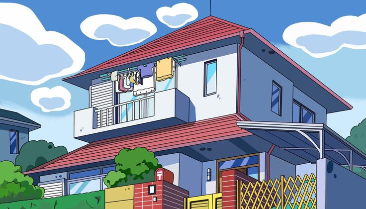

Changed the website theme to Crayon Shin-chan.
Replaced the original content with information about Shin-chan.
Added colorful images of Shin-chan and his friends.
Changed the font to the cute Fredoka cartoon font.
Customized the website with bright yellow, red, and blue colors.
Added JavaScript to display the current date and time.
Redesigned the website to create a fun and playful anime style.